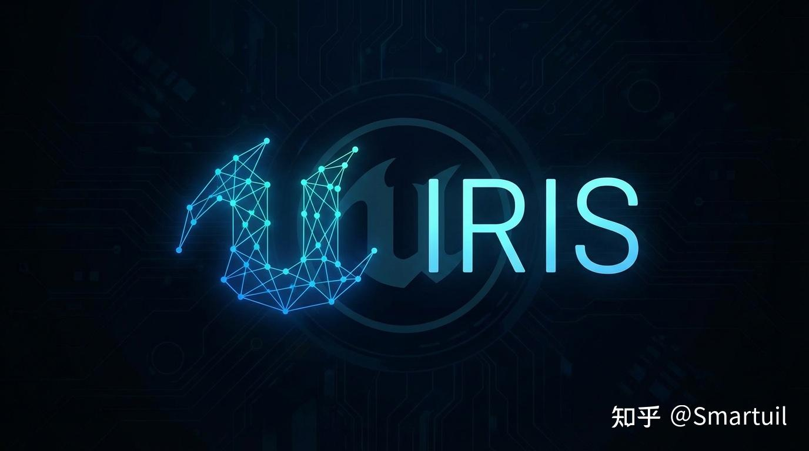

更好的阅读体验：
🌐 Iris 网络复制系统技术分析 - 第二部分：架构层次

🎯 本章目标：理解 Iris 的七层架构设计，就像了解一家物流公司的运作流程一样简单。
2.1 七层架构总览
📦 从一个国际快递中心说起
想象你要从北京仓库发货给全国各地的客户：
📦 仓库货物（服务器数据）："这批货要发给上海、广州、成都的客户"
↓
📝 入库登记 → 📋 订单分拣 → 📜 规则制定 → ⚖️ 调度排期 → 📦 打包封装 → 🚚 物流配送 → 🏠 客户签收Iris 的架构也是这样分层的，每一层都有明确的职责：
┌─────────────────────────────────────────────────────────────────────┐
│ 🏗️ Iris 七层架构 │
├─────────────────────────────────────────────────────────────────────┤
│ │
│ 🎮 第 1 层 游戏层 (Game Layer) │
│ 你的游戏代码：AActor、UActorComponent │
│ ───────────────────────────────────────── │
│ ↓↑ │
│ 🔌 第 2 层 引擎桥接层 (Engine Replication Bridge) │
│ UEngineReplicationBridge │
│ ───────────────────────────────────────── │
│ ↓↑ │
│ 🧩 第 3 层 对象桥接层 (Object Replication Bridge) │
│ UObjectReplicationBridge │
│ ───────────────────────────────────────── │
│ ↓↑ │
│ 🔗 第 4 层 复制桥接层 (Replication Bridge) │
│ UReplicationBridge │
│ ───────────────────────────────────────── │
│ ↓↑ │
│ 🧠 第 5 层 复制系统层 (Replication System) │
│ UReplicationSystem │
│ ───────────────────────────────────────── │
│ ↓↑ │
│ 📦 第 6 层 数据流层 (Data Streams) │
│ UDataStream、ReplicationWriter/Reader │
│ ───────────────────────────────────────── │
│ ↓↑ │
│ 🌐 第 7 层 网络传输层 (Network Transport) │
│ UNetConnection、底层 Socket │
│ │
└─────────────────────────────────────────────────────────────────────┘📦 快递物流比喻对照表
| 物流角色 | Iris 层次 | 职责 |
|---|---|---|
| 📦 仓库货物 | 🎮 游戏层 | 数据源头（服务器上的游戏对象） |
| 📝 入库登记 | 🔌 引擎桥接层 | 登记货物信息（注册 Actor/Component） |
| 📋 订单分拣 | 🧩 对象桥接层 | 分类整理（配置过滤/优先级规则） |
| 📜 规则制定 | 🔗 复制桥接层 | 制定复制协议（网络对象生命周期） |
| ⚖️ 调度排期 | 🧠 复制系统层 | 决定发哪些货、发给谁、先发哪个 |
| 📦 打包封装 | 📦 数据流层 | 把货物打包成快递包裹（序列化） |
| 🚚 物流配送 | 🌐 网络传输层 | 运输到目的地（发送网络数据包） |
❓ 为什么要分层？
❌ 不分层的问题（传统方式）：
┌─────────────────────────────────────┐
│ 一个巨大的类做所有事情 │
│ 😰 难以维护 │
│ 😰 难以测试 │
│ 😰 难以优化 │
│ 😰 改一处可能影响全局 │
└─────────────────────────────────────┘
✅ 分层的好处（Iris 方式）：
┌─────────────────────────────────────┐
│ 每层只关心自己的事情 │
│ 🎮 游戏层：我只管设置属性值 │
│ 🔌 桥接层：我只管翻译游戏对象 │
│ 🧠 复制层：我只管调度和过滤 │
│ 📦 数据层：我只管序列化 │
│ 🌐 传输层：我只管发包 │
└─────────────────────────────────────┘💡 新手理解：分层就像公司的部门划分——财务部不需要知道技术部怎么写代码，技术部也不需要知道财务部怎么做账。各司其职，效率更高。
📌 Bridge 层说明：第 2-4 层是继承关系（UEngineReplicationBridge → UObjectReplicationBridge → UReplicationBridge），共同组成”桥接层”，负责将游戏对象”翻译”成网络对象。
🎮 2.2 游戏层 (Game Layer)
🤔 这一层是什么？
游戏层就是你写的游戏代码。这是你最熟悉的地方：
// 🎮 这就是游戏层的代码
UCLASS()
class AMyCharacter : public ACharacter
{
GENERATED_BODY()
// ✨ 需要同步的属性
UPROPERTY(Replicated)
float Health;
UPROPERTY(Replicated)
int32 Score;
UPROPERTY(ReplicatedUsing = OnRep_WeaponClass)
TSubclassOf<AWeapon> CurrentWeaponClass;
UFUNCTION()
void OnRep_WeaponClass();
};📋 游戏层的职责
游戏层只需要做三件事：
1️⃣ 声明哪些属性需要同步
UPROPERTY(Replicated)
float Health;
2️⃣ 在服务器上修改属性值
Health = 100.0f; // 服务器修改，自动同步到客户端
3️⃣ （可选）处理属性变化通知
UFUNCTION()
void OnRep_Health() { UpdateHealthBar(); }🙅 你不需要关心的事情
作为游戏程序员，你不需要关心：
❌ 数据怎么打包成二进制
❌ 网络包怎么发送
❌ 客户端怎么接收
❌ 属性怎么反序列化
❌ 带宽怎么分配
✅ 这些都由下面的层自动处理！🔄 游戏层与复制系统的交互
🎮 游戏层
│
┌─────────────────┼─────────────────┐
│ │ │
▼ ▼ ▼
📝 设置属性 📞 调用 RPC 🆕 创建/销毁对象
│ │ │
▼ ▼ ▼
Health = 50 ClientRPC_ShowDamage() SpawnActor()
│ │ │
└─────────────────┼─────────────────┘
│
▼
✨ Iris 自动处理同步💻 代码示例：一个完整的可复制 Actor
// 📁 MyProjectile.h
UCLASS()
class AMyProjectile : public AActor
{
GENERATED_BODY()
public:
AMyProjectile();
// 📋 告诉引擎这个 Actor 需要网络复制
virtual void GetLifetimeReplicatedProps(TArray<FLifetimeProperty>& OutLifetimeProps) const override;
protected:
// 🚀 位置和速度需要同步
UPROPERTY(Replicated)
FVector Velocity;
// 💥 伤害值只需要同步一次（InitialOnly）
UPROPERTY(Replicated)
float Damage;
// 👤 拥有者变化时需要通知
UPROPERTY(ReplicatedUsing = OnRep_OwnerPlayer)
APlayerController* OwnerPlayer;
UFUNCTION()
void OnRep_OwnerPlayer();
};
// 📁 MyProjectile.cpp
void AMyProjectile::GetLifetimeReplicatedProps(TArray<FLifetimeProperty>& OutLifetimeProps) const
{
Super::GetLifetimeReplicatedProps(OutLifetimeProps);
DOREPLIFETIME(AMyProjectile, Velocity);
DOREPLIFETIME_CONDITION(AMyProjectile, Damage, COND_InitialOnly);
DOREPLIFETIME(AMyProjectile, OwnerPlayer);
} 💡 新手提示：游戏层是你唯一需要写代码的地方。只要正确使用 UPROPERTY(Replicated)，Iris 会自动处理剩下的一切。🔌 2.3 引擎桥接层 (Engine Replication Bridge)
🤔 这一层是什么？
引擎桥接层是游戏层和 Iris 系统之间的翻译官。它把 Unreal 的 Actor/Component 概念翻译成 Iris 能理解的网络对象。
🌍 生活比喻：国际会议的同声传译
🇨🇳 中国代表（游戏层） 🎙️ 翻译官（引擎桥接层） 🌐 外国代表（Iris 系统）
│ │ │
│ "我们需要同步这个角色" │ │
│───────────────────────→│ │
│ │ "Register NetObject │
│ │ with handle 0x1234" │
│ │────────────────────────→│
│ │ │📋 UEngineReplicationBridge 的核心职责
┌─────────────────────────────────────────────────────────────────┐
│ 🔌 UEngineReplicationBridge 职责 │
├─────────────────────────────────────────────────────────────────┤
│ │
│ 1️⃣ Actor 生命周期管理 │
│ • Actor 创建时 → 注册为网络对象 │
│ • Actor 销毁时 → 注销网络对象 │
│ │
│ 2️⃣ Component 管理 │
│ • 跟踪 Actor 的所有可复制组件 │
│ • 管理组件的子对象关系 │
│ │
│ 3️⃣ 与 NetDriver 集成 │
│ • 接收 NetDriver 的复制请求 │
│ • 协调传统复制和 Iris 复制 │
│ │
└─────────────────────────────────────────────────────────────────┘🔄 Actor 生命周期管理
🆕 Actor 创建流程：
🎮 游戏代码 🔌 引擎桥接层 🌐 Iris 系统
│ │ │
│ SpawnActor<AEnemy>() │ │
│──────────────────────────→│ │
│ │ │
│ │ 🔍 检查：这个 Actor 需要复制吗？
│ │ (bReplicates == true?) │
│ │ │
│ │ ✅ 是 → BeginReplication() │
│ │────────────────────────────→│
│ │ │
│ │ 🎫 分配 NetRefHandle │
│ │←────────────────────────────│
│ │ 0x00001234 │
│ │ │
│ 返回 AEnemy* │ │
│←──────────────────────────│ │
🗑️ Actor 销毁流程：
🎮 游戏代码 🔌 引擎桥接层 🌐 Iris 系统
│ │ │
│ Enemy->Destroy() │ │
│──────────────────────────→│ │
│ │ │
│ │ EndReplication() │
│ │────────────────────────────→│
│ │ │
│ │ ♻️ 回收 NetRefHandle │
│ │ 📢 通知所有客户端销毁 │
│ │←────────────────────────────│
│ │ │🔗 与 NetDriver 的集成
⚖️ 传统 NetDriver 复制 vs Iris 复制：
┌─────────────────────────────────────────────────────────────────┐
│ NetDriver │
│ │ │
│ ┌────────────┴────────────┐ │
│ │ │ │
│ ▼ ▼ │
│ 🏚️ 传统复制路径 🆕 Iris 复制路径 │
│ (旧系统) (新系统) │
│ │ │ │
│ │ ▼ │
│ │ 🔌 UEngineReplicationBridge │
│ │ │ │
│ │ ▼ │
│ │ 🌐 Iris 系统 │
│ │ │
└─────────────────────────────────────────────────────────────────┘
💡 引擎桥接层让两种系统可以共存，方便逐步迁移。
🔧 共存实现机制：
┌─────────────────────────────────────────────────────────────────┐
│ 1️⃣ 全局开关控制 │
│ • 命令行参数：-UseIrisReplication=true/false │
│ • 运行时 API：UE::Net::SetUseIrisReplication(bool) │
│ • 配置优先级：命令行 > 项目设置 > 默认值 │
│ │
│ 2️⃣ 路由分发 │
│ NetDriver 在复制时检查全局开关： │
│ • 开关=true → 走 Iris 路径（UEngineReplicationBridge） │
│ • 开关=false → 走传统路径（原有 AActor::ReplicateActor） │
│ │
│ 3️⃣ 接口兼容 │
│ UEngineReplicationBridge 实现了与传统系统相同的语义： │
│ • BeginReplication() ≈ 传统的 bReplicates=true │
│ • EndReplication() ≈ 传统的 bReplicates=false │
│ • 游戏代码无需修改，桥接层自动适配 │
│ │
│ 4️⃣ 渐进迁移 │
│ 可以先在测试环境启用 Iris，验证无问题后再全面切换 │
└─────────────────────────────────────────────────────────────────┘🔧 关键接口
// 🔌 UEngineReplicationBridge 的关键方法（简化版）
class UEngineReplicationBridge : public UObjectReplicationBridge
{
// 🆕 开始复制一个 Actor
FNetRefHandle BeginReplication(AActor* Actor);
// 🗑️ 结束复制一个 Actor
void EndReplication(AActor* Actor);
// 🔍 获取 Actor 的网络句柄
FNetRefHandle GetNetRefHandle(const AActor* Actor);
// 🔍 从网络句柄获取 Actor
AActor* GetActor(FNetRefHandle Handle);
// 🧩 处理 Actor 的组件
void UpdateComponentsToReplicate(AActor* Actor);
};💡 新手理解：引擎桥接层就像机场的海关——它检查每个”旅客”（Actor）是否有”护照”（需要复制），然后给他们发放”签证”（NetRefHandle）。
🧩 2.4 对象桥接层 (Object Replication Bridge)
🤔 这一层是什么？
对象桥接层是引擎桥接层的基类，处理更通用的 UObject 复制逻辑。如果说引擎桥接层是”Actor 专家”，那对象桥接层就是”通用对象专家”。
📊 继承关系：
🔷 UReplicationBridge（抽象基类）
│
▼
🔶 UObjectReplicationBridge（处理 UObject）
│
▼
🔵 UEngineReplicationBridge（处理 Actor/Component）📋 UObjectReplicationBridge 的核心职责
┌─────────────────────────────────────────────────────────────────┐
│ 🧩 UObjectReplicationBridge 职责 │
├─────────────────────────────────────────────────────────────────┤
│ │
│ 1️⃣ 过滤/优先级配置 │
│ • 为每个对象类型配置过滤器 │
│ • 为每个对象类型配置优先级策略 │
│ │
│ 2️⃣ 轮询/脏数据检测 │
│ • 检测哪些对象的属性发生了变化 │
│ • 管理轮询频率 │
│ │
│ 3️⃣ 根对象与子对象管理 │
│ • 区分独立复制的对象（根对象） │
│ • 管理依附于其他对象的子对象 │
│ │
│ 4️⃣ 休眠 (Dormancy) 管理 │
│ • 暂停不活跃对象的复制 │
│ • 节省带宽和 CPU │
│ │
└─────────────────────────────────────────────────────────────────┘🌳 根对象 vs 子对象
🌳 根对象 (Root Object)：
• 独立存在，有自己的 NetRefHandle
• 例如：ACharacter、AWeapon、AVehicle
🍃 子对象 (Sub Object)：
• 依附于根对象，随根对象一起复制
• 例如：UActorComponent、UInventoryItem
┌─────────────────────────────────────────────────────────────────┐
│ │
│ 🌳 ACharacter (根对象) │
│ ├── 🍃 USkeletalMeshComponent (子对象) │
│ ├── 🍃 UCharacterMovementComponent (子对象) │
│ └── 🍃 UInventoryComponent (子对象) │
│ ├── 🍂 UWeaponItem (子对象的子对象) │
│ └── 🍂 UArmorItem (子对象的子对象) │
│ │
└─────────────────────────────────────────────────────────────────┘
📌 复制时：
• 根对象决定"是否复制"
• 子对象跟随根对象一起复制⚙️ 过滤和优先级配置
📋 对象桥接层为每种类型的对象配置"规则"：
┌─────────────────────────────────────────────────────────────────┐
│ 🎯 类型配置示例 │
├─────────────────────────────────────────────────────────────────┤
│ │
│ 👹 AEnemy: │
│ 🔍 过滤器: GridFilter (只同步给附近的玩家) │
│ ⭐ 优先级策略: SphereWithOwnerBoost (距离越近优先级越高) │
│ ⏱️ 轮询频率: 每 2 帧检查一次 │
│ │
│ 🚀 AProjectile: │
│ 🔍 过滤器: 无 (同步给所有人) │
│ ⭐ 优先级策略: Sphere (纯距离优先级) │
│ ⏱️ 轮询频率: 每帧检查 │
│ │
│ 💎 APickupItem: │
│ 🔍 过滤器: GridFilter │
│ ⭐ 优先级策略: 无 (默认优先级) │
│ ⏱️ 轮询频率: 每 10 帧检查一次 (物品不常变化) │
│ │
└─────────────────────────────────────────────────────────────────┘🔍 脏数据检测
💩 "脏"数据 = 发生了变化的数据
🔍 检测方式：
📊 方式 1：轮询 (Poll)
每隔 N 帧检查一次属性是否变化
帧 1: Health = 100 → 📝 记录
帧 2: Health = 100 → ✅ 没变，跳过
帧 3: Health = 80 → 🚨 变了！标记为脏
⚡ 方式 2：推送 (Push)
属性变化时主动通知
Health = 80; // 设置属性
MARK_PROPERTY_DIRTY(this, Health); // 🏷️ 主动标记为脏
✨ 优点：不需要每帧检查，更高效😴 休眠管理
😴 休眠 (Dormancy) = 暂停复制
🎬 场景：一个敌人站在远处不动
❌ 不休眠：
每帧都检查 → 每帧都发现没变化 → 浪费 CPU 😰
✅ 休眠：
检测到长时间没变化 → 进入休眠 → 停止检查 😴
检测到变化 → 唤醒 → 恢复检查 ⚡
┌─────────────────────────────────────────────────────────────────┐
│ │
│ ⚡ 活跃状态 😴 休眠状态 ⚡ 活跃状态 │
│ [每帧检查] ──(5秒没变化)──→ [停止检查] ──(属性变化)──→ [每帧检查]│
│ │
└─────────────────────────────────────────────────────────────────┘💡 新手理解：对象桥接层就像物业管理公司——它知道每个住户（对象）的情况，决定谁需要特殊服务（过滤/优先级），谁可以少打扰（休眠）。
🔗 2.5 复制桥接层 (Replication Bridge)
🤔 这一层是什么？
复制桥接层是 Bridge 层的基类，定义了网络对象的基本复制协议。它是 UObjectReplicationBridge 和 UEngineReplicationBridge 的父类。
📊 继承关系（从下往上看）：
🔗 UReplicationBridge（基类）← 第 4 层：定义复制协议
↑
🧩 UObjectReplicationBridge ← 第 3 层：处理 UObject
↑
🔌 UEngineReplicationBridge ← 第 2 层：处理 Actor/Component📋 UReplicationBridge 的核心职责
┌─────────────────────────────────────────────────────────────────┐
│ 🔗 UReplicationBridge 职责 │
├─────────────────────────────────────────────────────────────────┤
│ │
│ 1️⃣ 网络对象创建/销毁 │
│ • 管理复制对象的生命周期 │
│ • 分配和回收 NetRefHandle │
│ │
│ 2️⃣ 子对象管理 │
│ • 处理 SubObject 的注册和注销 │
│ • 维护父子对象关系 │
│ │
│ 3️⃣ 关卡组管理 │
│ • 支持关卡流送的过滤组 │
│ • 管理对象所属的关卡 │
│ │
│ 4️⃣ 复制协议管理 │
│ • 定义对象的复制规则 │
│ • 管理 ReplicationProtocol │
│ │
└─────────────────────────────────────────────────────────────────┘🔧 关键概念
🎫 NetRefHandle：
• 每个网络对象的唯一标识符
• 服务器和客户端通过它识别同一个对象
• 类似于"身份证号"
📜 ReplicationProtocol：
• 描述对象如何复制
• 包含哪些属性、如何序列化等信息
• 类似于"复制说明书"
🌳 关卡组：
• 按关卡分组管理对象
• 支持关卡流送时的批量过滤
• 类似于"按楼层管理住户"💡 新手理解：复制桥接层就像户籍管理处——它给每个”居民”（网络对象）发放”身份证”（NetRefHandle），制定”户籍规则”（ReplicationProtocol），并按”社区”（关卡组）管理。
🧠 2.6 复制系统层 (Replication System)
🤔 这一层是什么？
复制系统层是 Iris 的大脑和心脏。它协调所有的复制工作，就像一个大型物流中心的调度中心。
🏭 生活比喻：快递分拣中心
┌─────────────────┐
│ 🧠 调度中心 │
│ (ReplicationSystem)
└────────┬────────┘
│
┌────────────────────┼────────────────────┐
│ │ │
▼ ▼ ▼
┌─────────┐ ┌─────────┐ ┌─────────┐
│ 🔍 过滤 │ │ ⭐ 优先级│ │ 🔗 连接 │
│ "这个包裹│ │ "先送哪个│ │ "送到哪个│
│ 送不送？"│ │ 包裹？" │ │ 地址？" │
└─────────┘ └─────────┘ └─────────┘📋 UReplicationSystem 的核心职责
┌─────────────────────────────────────────────────────────────────┐
│ 🧠 UReplicationSystem 职责 │
├─────────────────────────────────────────────────────────────────┤
│ │
│ 1️⃣ 主更新循环 (NetUpdate) │
│ • 每帧调用，驱动整个复制流程 │
│ • 协调过滤、优先级、序列化 │
│ │
│ 2️⃣ 连接管理 │
│ • 管理所有客户端连接 │
│ • 每个连接有独立的复制状态 │
│ │
│ 3️⃣ 过滤系统 │
│ • 决定哪些对象发送给哪些客户端 │
│ • 调用各种过滤器 │
│ │
│ 4️⃣ 优先级系统 │
│ • 决定对象的发送顺序 │
│ • 带宽不够时优先发送重要对象 │
│ │
│ 5️⃣ 组管理 │
│ • 管理复制组（如关卡流送组） │
│ • 批量控制对象的复制状态 │
│ │
│ 6️⃣ RPC 处理 │
│ • 处理远程过程调用 │
│ • 保证 RPC 的可靠性 │
│ │
└─────────────────────────────────────────────────────────────────┘🔄 主更新循环 (NetUpdate)
⏱️ 每帧的复制流程：
┌─────────────────────────────────────────────────────────────────┐
│ 🔄 NetUpdate() 流程 │
├─────────────────────────────────────────────────────────────────┤
│ │
│ 1️⃣ 收集脏对象 │
│ "哪些对象的属性变了？" 🔍 │
│ ↓ │
│ 2️⃣ 过滤 │
│ "这些对象应该发给哪些客户端？" 🎯 │
│ ↓ │
│ 3️⃣ 优先级排序 │
│ "带宽有限，先发哪些？" ⭐ │
│ ↓ │
│ 4️⃣ 序列化 │
│ "把对象数据打包成二进制" 📦 │
│ ↓ │
│ 5️⃣ 发送 │
│ "通过网络发出去" 🚀 │
│ │
└─────────────────────────────────────────────────────────────────┘🔗 连接管理
🌐 每个客户端连接都是独立的：
🖥️ 服务器
│
├── 🔗 连接 1 (玩家 A 👤)
│ ├── 🔍 过滤结果：可见对象 [Enemy1, Enemy2, Item1]
│ ├── ⭐ 优先级：Enemy1 > Item1 > Enemy2
│ └── 📬 待发送队列：[Enemy1 的数据, Item1 的数据...]
│
├── 🔗 连接 2 (玩家 B 👤)
│ ├── 🔍 过滤结果：可见对象 [Enemy2, Enemy3, Item2]
│ ├── ⭐ 优先级：Enemy3 > Enemy2 > Item2
│ └── 📬 待发送队列：[Enemy3 的数据, Enemy2 的数据...]
│
└── 🔗 连接 3 (玩家 C 👤)
├── 🔍 过滤结果：可见对象 [Enemy1, Enemy3]
├── ⭐ 优先级：Enemy1 > Enemy3
└── 📬 待发送队列：[Enemy1 的数据, Enemy3 的数据...]
💡 每个玩家看到的世界是不同的！🔍 过滤系统工作原理
🔍 过滤 = 决定"谁能看到什么"
🎬 场景：大逃杀游戏，100 个玩家
❌ 不过滤：
每个玩家都收到 99 个其他玩家的数据
总数据量 = 100 × 99 = 9900 份数据/帧
💥 带宽爆炸！
✅ 过滤后：
每个玩家只收到附近 10 个玩家的数据
总数据量 = 100 × 10 = 1000 份数据/帧
🎉 节省 90% 带宽！
┌─────────────────────────────────────────────────────────────────┐
│ │
│ 👁️ 玩家 A 的视野 │
│ ┌─────────────────────────────────┐ │
│ │ · · · │ │
│ │ · · │ · = 其他玩家 │
│ │ · 🅰️ · ← 只同步这些 │ 🅰️ = 玩家 A │
│ │ · · │ │
│ │ · · · │ │
│ └─────────────────────────────────┘ │
│ │
│ 🚫 视野外的玩家不同步，节省带宽 │
│ │
└─────────────────────────────────────────────────────────────────┘⭐ 优先级系统工作原理
⭐ 优先级 = 决定"先发什么"
🎬 场景：带宽只够发 5 个对象，但有 10 个对象需要发送
📊 优先级排序：
1. 🔴 正在攻击你的敌人 (优先级: 100)
2. 🎯 你瞄准的目标 (优先级: 90)
3. 👥 附近的队友 (优先级: 80)
4. 💎 附近的物品 (优先级: 50)
5. 👹 远处的敌人 (优先级: 30)
─────────────────────────────── 📶 带宽上限
6. 📦 远处的物品 (优先级: 20) ← ⏳ 下一帧再发
7. 🧑 背景 NPC (优先级: 10) ← ⏳ 下一帧再发
...
✨ 结果：重要的对象优先同步，不重要的可以延迟💡 新手理解：复制系统层就像机场的航班调度中心——它决定哪些航班（对象）可以起飞（发送），什么时候起飞（优先级），飞往哪里（连接）。
📦 2.7 数据流层 (Data Streams)
🤔 这一层是什么？
数据流层负责实际的数据打包和传输。如果复制系统层是”决策者”，数据流层就是”执行者”。
📦 生活比喻：快递打包员
📋 调度中心说："把这个手机发给客户 A"
👷 打包员做：
1. 📱 拿出手机
2. 🫧 用气泡膜包好
3. 📦 放进纸箱
4. 🏷️ 贴上地址标签
5. 🚚 交给快递员📋 UDataStream 的核心职责
┌─────────────────────────────────────────────────────────────────┐
│ 📦 UDataStream 职责 │
├─────────────────────────────────────────────────────────────────┤
│ │
│ 1️⃣ 数据序列化 │
│ • 把游戏对象转换成二进制数据 │
│ • 把二进制数据还原成游戏对象 │
│ │
│ 2️⃣ 可靠/不可靠传输 │
│ • ✅ 可靠：保证送达，如 RPC、重要状态 │
│ • ⚡ 不可靠：可能丢失，如位置更新 │
│ │
│ 3️⃣ 带宽管理 │
│ • 控制每帧发送的数据量 │
│ • 防止网络拥塞 │
│ │
└─────────────────────────────────────────────────────────────────┘🔄 序列化过程
🔄 序列化 = 把对象变成字节流
🎮 游戏对象 💾 二进制数据
┌─────────────────┐ ┌─────────────────┐
│ 👹 AEnemy │ │ 01 00 00 00 │ ← 🎫 NetRefHandle
│ - Health: 100 │ ──序列化──→ │ 64 00 00 00 │ ← ❤️ Health (100)
│ - Position: ... │ │ 00 00 C8 42 │ ← 📍 Position.X
│ - Rotation: ... │ │ 00 00 96 43 │ ← 📍 Position.Y
└─────────────────┘ │ ... │
└─────────────────┘
🔄 反序列化 = 把字节流变回对象（接收端执行）✍️ ReplicationWriter 和 📖 ReplicationReader
┌─────────────────────────────────────────────────────────────────┐
│ │
│ 🖥️ 服务器端 💻 客户端 │
│ │
│ ✍️ ReplicationWriter 📖 ReplicationReader │
│ ┌─────────────────┐ ┌─────────────────┐ │
│ │ 1. 收集脏对象 🔍 │ │ 1. 接收数据包 📨 │ │
│ │ 2. 序列化属性 📦 │ ──网络传输──→ │ 2. 反序列化属性 🔓│ │
│ │ 3. 打包发送 🚀 │ │ 3. 更新对象 ✨ │ │
│ │ 4. 记录基线 📝 │ │ 4. 调用 RepNotify 🔔│ │
│ └─────────────────┘ └─────────────────┘ │
│ │
└─────────────────────────────────────────────────────────────────┘✅ 可靠 vs ⚡ 不可靠传输
✅ 可靠传输 (Reliable)：
• 保证送达 💯
• 丢包会重传 🔄
• 有序到达 📋
• 适用于：RPC、重要状态变化、对象创建/销毁
⚡ 不可靠传输 (Unreliable)：
• 不保证送达 ❓
• 丢包不重传 🚫
• 可能乱序 🔀
• 适用于：位置更新、动画状态（下一帧会覆盖）
┌─────────────────────────────────────────────────────────────────┐
│ │
│ ✅ 可靠传输 │
│ 发送: [1️⃣] [2️⃣] [3️⃣] │
│ 丢失: [2️⃣] ❌ │
│ 重传: [2️⃣] 🔄 │
│ 接收: [1️⃣] [2️⃣] [3️⃣] ← 完整有序 ✨ │
│ │
│ ⚡ 不可靠传输 │
│ 发送: [1️⃣] [2️⃣] [3️⃣] │
│ 丢失: [2️⃣] ❌ │
│ 接收: [1️⃣] [3️⃣] ← 丢了就丢了，继续 🏃 │
│ │
└─────────────────────────────────────────────────────────────────┘📊 带宽管理
📊 带宽 = 每秒能发送的数据量
🎬 场景：带宽上限 10KB/帧，但有 50KB 数据要发
❌ 不管理：
强行发送 50KB → 网络拥塞 → 延迟飙升 → 游戏卡顿 😰
✅ 带宽管理：
第 1 帧：发送最重要的 10KB 🥇
第 2 帧：发送次重要的 10KB 🥈
第 3 帧：发送第三重要的 10KB 🥉
...
✨ 结果：网络平稳，重要数据优先送达
┌─────────────────────────────────────────────────────────────────┐
│ │
│ 📊 带宽分配示意 │
│ │
│ ████████████████████████████████████████ 📶 10KB 带宽上限 │
│ ████████████ 👤 玩家状态 (高优先级) │
│ ████████ 👹 敌人状态 (中优先级) │
│ ████ 💎 物品状态 (低优先级) │
│ ───────────────────────────────────────── │
│ ⏳ 剩余数据下一帧发送 │
│ │
└─────────────────────────────────────────────────────────────────┘💡 新手理解：数据流层就像物流公司的打包和运输部门——它把货物（数据）打包好，选择合适的运输方式（可靠/不可靠），控制发货速度（带宽管理）。
🌐 2.8 网络传输层 (Network Transport)
🤔 这一层是什么？
网络传输层是 Iris 的最底层，负责实际的网络通信。它直接和操作系统的网络 API 打交道。
🚴 生活比喻：快递员
📦 打包员把包裹准备好 → 🚴 快递员骑车送到客户家
🌐 网络传输层不关心包裹里是什么，只负责"送到"。📋 UNetConnection 的职责
┌─────────────────────────────────────────────────────────────────┐
│ 🌐 UNetConnection 职责 │
├─────────────────────────────────────────────────────────────────┤
│ │
│ 1️⃣ 底层网络传输 │
│ • 发送 UDP/TCP 数据包 📤 │
│ • 接收网络数据 📥 │
│ │
│ 2️⃣ 连接状态管理 │
│ • 连接/断开检测 🔗 │
│ • 心跳包 💓 │
│ • 超时处理 ⏰ │
│ │
│ 3️⃣ 数据包管理 │
│ • 包序号 🔢 │
│ • 确认/重传 ✅ │
│ • 拥塞控制 🚦 │
│ │
└─────────────────────────────────────────────────────────────────┘📨 网络数据包结构
📨 一个网络数据包的结构：
┌─────────────────────────────────────────────────────────────────┐
│ 📨 网络数据包 │
├─────────────────────────────────────────────────────────────────┤
│ 🏷️ 包头 (Header) │
│ ├── 🔢 包序号: 12345 │
│ ├── ✅ 确认号: 12340 (确认收到对方的包) │
│ └── 🚩 标志位: 可靠/不可靠 │
├─────────────────────────────────────────────────────────────────┤
│ 📦 负载 (Payload) │
│ ├── 👹 对象 1 的数据 │
│ ├── 💎 对象 2 的数据 │
│ ├── 📞 RPC 调用数据 │
│ └── ... │
├─────────────────────────────────────────────────────────────────┤
│ 🔐 校验 (Checksum) │
│ └── CRC32 校验和 │
└─────────────────────────────────────────────────────────────────┘🔗 连接状态
🔗 连接生命周期：
[🔴 未连接] ──(🤝 握手)──→ [🟡 连接中] ──(✅ 成功)──→ [🟢 已连接]
│
├──(⏰ 超时)──→ [🔴 断开]
│
└──(👋 主动断开)──→ [🔴 断开]
💓 心跳机制：
💻 客户端每 X 秒发送心跳包
🖥️ 服务器 Y 秒没收到心跳 → 判定断开 ❌🔄 与上层的关系
🌐 网络传输层只做最简单的事情：
📦 上层（数据流层）："这是 1024 字节数据，发给客户端 A"
🌐 传输层："收到，发送中... 🚀"
🌐 传输层："发送完成 ✅ / 发送失败 ❌"
🤷 传输层不知道也不关心：
• 这些字节是什么意思
• 为什么要发给客户端 A
• 数据是否重要💡 新手理解：网络传输层就像邮局——它不拆开信封看内容，只负责按地址把信送到。
🔄 2.9 数据流向概览
📤 发送流程（自上而下）
让我们跟踪一个属性变化是如何从服务器发送到客户端的：
🎬 场景：服务器上敌人的 Health 从 100 变成 80
┌─────────────────────────────────────────────────────────────────┐
│ 🎮 第 1 层：游戏层 │
│ │
│ Enemy->Health = 80; // 💻 游戏代码修改属性 │
│ │
│ ↓ 🏷️ 属性被标记为"脏" │
└─────────────────────────────────────────────────────────────────┘
↓
┌─────────────────────────────────────────────────────────────────┐
│ 🔌 第 2 层：引擎桥接层 │
│ │
│ 🔍 检测到 Enemy Actor 有脏属性 │
│ 📢 通知对象桥接层 │
│ │
│ ↓ │
└─────────────────────────────────────────────────────────────────┘
↓
┌─────────────────────────────────────────────────────────────────┐
│ 🧩 第 3 层：对象桥接层 │
│ │
│ 📝 将 Enemy 加入脏对象列表 │
│ ⏱️ 检查轮询频率：可以发送 ✅ │
│ │
│ ↓ │
└─────────────────────────────────────────────────────────────────┘
↓
┌─────────────────────────────────────────────────────────────────┐
│ 🔗 第 4 层：复制桥接层 │
│ │
│ 🎫 确认 Enemy 的 NetRefHandle │
│ 📜 获取复制协议 │
│ │
│ ↓ │
└─────────────────────────────────────────────────────────────────┘
↓
┌─────────────────────────────────────────────────────────────────┐
│ 🧠 第 5 层：复制系统层 │
│ │
│ 对每个连接： │
│ ├── 🔍 过滤：客户端 A 能看到 Enemy 吗？ → ✅ 能 │
│ ├── ⭐ 优先级：Enemy 的优先级是多少？ → 85 │
│ └── 📋 决定：加入客户端 A 的发送队列 │
│ │
│ ↓ │
└─────────────────────────────────────────────────────────────────┘
↓
┌─────────────────────────────────────────────────────────────────┐
│ 📦 第 6 层：数据流层 │
│ │
│ ✍️ ReplicationWriter: │
│ ├── 📖 读取 Enemy 的 Health 属性 │
│ ├── 🔄 序列化：80 → 0x50 0x00 0x00 0x00 │
│ ├── 🎭 计算变化掩码：只有 Health 变了 │
│ └── 📦 打包进数据包 │
│ │
│ ↓ │
└─────────────────────────────────────────────────────────────────┘
↓
┌─────────────────────────────────────────────────────────────────┐
│ 🌐 第 7 层：网络传输层 │
│ │
│ 🔗 UNetConnection: │
│ ├── 🏷️ 添加包头（序号、确认号） │
│ ├── 🔐 添加校验和 │
│ └── 🚀 通过 UDP Socket 发送 │
│ │
│ → 📨 数据包飞向客户端... │
└─────────────────────────────────────────────────────────────────┘📥 接收流程（自下而上）
🎬 场景：客户端收到敌人 Health 变化的数据包
📨 收到网络数据包
↓
┌─────────────────────────────────────────────────────────────────┐
│ 🌐 第 7 层：网络传输层 │
│ │
│ 🔗 UNetConnection: │
│ ├── 📥 收到 UDP 数据包 │
│ ├── 🔐 验证校验和：正确 ✅ │
│ ├── 🔢 检查包序号：正确顺序 ✅ │
│ └── 📦 提取负载数据 │
│ │
└─────────────────────────────────────────────────────────────────┘
↓
┌─────────────────────────────────────────────────────────────────┐
│ 📦 第 6 层：数据流层 │
│ │
│ 📖 ReplicationReader: │
│ ├── 🎭 解析变化掩码：只有 Health 变了 │
│ ├── 🔄 反序列化：0x50 0x00 0x00 0x00 → 80 │
│ └── 📋 准备更新对象 │
│ │
└─────────────────────────────────────────────────────────────────┘
↓
┌─────────────────────────────────────────────────────────────────┐
│ 🧠 第 5 层：复制系统层 │
│ │
│ 🔍 根据 NetRefHandle 找到对应的 Enemy 对象 │
│ 📋 准备应用属性更新 │
│ │
└─────────────────────────────────────────────────────────────────┘
↓
┌─────────────────────────────────────────────────────────────────┐
│ 🔗 第 4 层：复制桥接层 │
│ │
│ 📜 根据复制协议处理数据 │
│ 🎫 验证 NetRefHandle 有效性 │
│ │
└─────────────────────────────────────────────────────────────────┘
↓
┌─────────────────────────────────────────────────────────────────┐
│ 🧩 第 3 层：对象桥接层 │
│ │
│ ✨ 应用属性更新到 Enemy 对象 │
│ 🔔 检查是否需要调用 RepNotify │
│ │
└─────────────────────────────────────────────────────────────────┘
↓
┌─────────────────────────────────────────────────────────────────┐
│ 🔌 第 2 层：引擎桥接层 │
│ │
│ Enemy->Health = 80; // ✨ 更新属性值 │
│ 调用 OnRep_Health(); // 🔔 如果有 RepNotify │
│ │
└─────────────────────────────────────────────────────────────────┘
↓
┌─────────────────────────────────────────────────────────────────┐
│ 🎮 第 1 层：游戏层 │
│ │
│ void AEnemy::OnRep_Health() │
│ { │
│ UpdateHealthBar(); // 📊 更新血条 UI │
│ if (Health <= 0) │
│ PlayDeathAnimation(); // 💀 播放死亡动画 │
│ } │
│ │
└─────────────────────────────────────────────────────────────────┘🌍 完整数据包旅程
🚀 一个属性变化的完整旅程：
🖥️ 服务器 💻 客户端
─────── ───────
💻 游戏代码修改属性
│
▼
🔍 检测到脏数据
│
▼
🎯 过滤：该发给谁？
│
▼
⭐ 优先级：先发什么？
│
▼
📦 序列化成二进制
│
▼
📨 打包成网络数据包
│
▼
╔═══════════════════════════════════════════════════════╗
║ 🌍 互联网 ║
║ ║
║ 📨 [数据包] ─────────────────────────────→ 📨 [数据包]║
║ ║
║ ⏱️ 延迟: 50ms ║
║ ⚠️ 可能丢包、乱序 ║
╚═══════════════════════════════════════════════════════╝
│
▼
📥 收到网络数据包
│
▼
🔐 验证、排序
│
▼
🔄 反序列化
│
▼
✨ 更新游戏对象
│
▼
🔔 调用 RepNotify
│
▼
🎮 游戏逻辑响应📚 本章小结
┌─────────────────────────────────────────────────────────────────┐
│ 🏗️ 七层架构总结 │
├─────────────────────────────────────────────────────────────────┤
│ │
│ 层次 职责 类比 │
│ ──── ──── ──── │
│ 🎮 游戏层 写游戏代码 📦 仓库货物 │
│ 🔌 引擎桥接层 翻译 Actor/Component 📝 入库登记 │
│ 🧩 对象桥接层 管理对象、配置规则 📋 订单分拣 │
│ 🔗 复制桥接层 定义复制协议 📜 规则制定 │
│ 🧠 复制系统层 过滤、优先级、调度 ⚖️ 调度排期 │
│ 📦 数据流层 序列化、打包 📦 打包封装 │
│ 🌐 网络传输层 发送/接收数据包 🚚 物流配送 │
│ │
├─────────────────────────────────────────────────────────────────┤
│ │
│ 🔑 核心要点： │
│ 1️⃣ 每层只关心自己的事情，不越界 │
│ 2️⃣ 数据自上而下发送，自下而上接收 │
│ 3️⃣ 游戏程序员只需要关心游戏层 │
│ 4️⃣ 分层设计让系统更容易维护和优化 │
│ 5️⃣ Bridge 层（2-4层）是继承关系，共同负责"翻译"工作 │
│ │
└─────────────────────────────────────────────────────────────────┘💡 新手提示：不需要一次理解所有层次。作为游戏开发者，你只需要知道：
- 用
UPROPERTY(Replicated)标记属性 🏷️ - 在服务器上修改属性值 ✏️
- （可选）写
OnRep_函数处理变化 🔔
其他的，Iris 会帮你搞定！ ✨
本文档基于 Unreal Engine 5.5.0 Iris 源代码分析（源码目录：Engine/Source/Runtime/Experimental/Iris/）